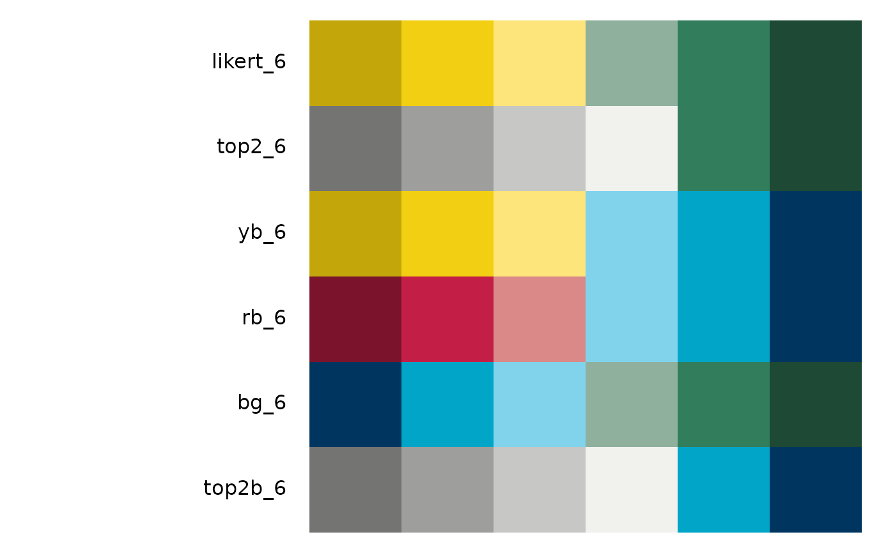
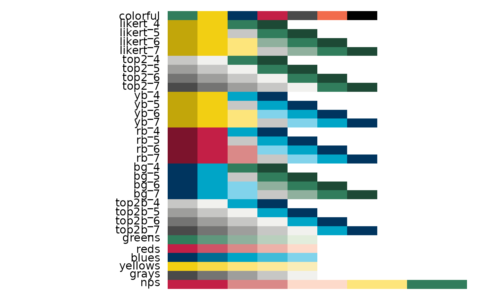
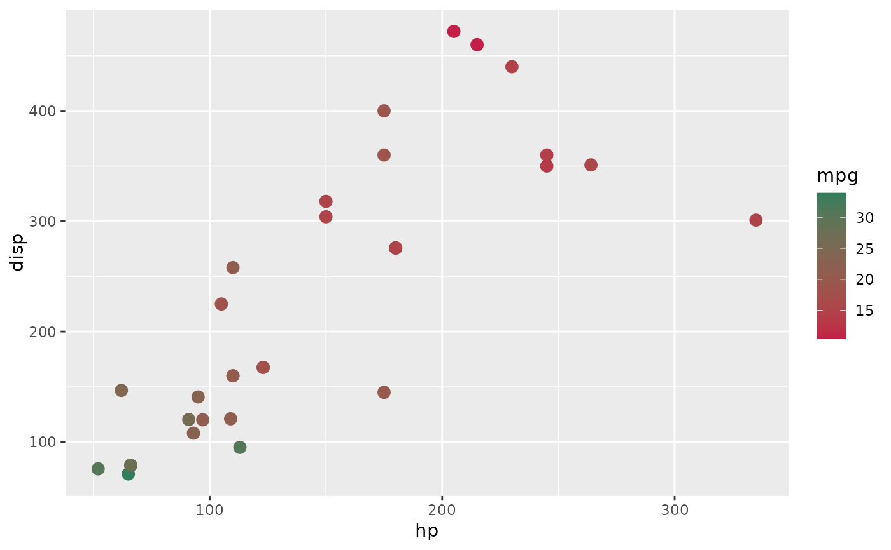

Use or see
Usage
tntp_palette(palette = "likert_6", reverse = FALSE)
show_tntp_palette(..., reverse = FALSE, pattern = NULL)Arguments
- palette
Name of the TNTP palette you want to use. To see all available palettes, use
show_tntp_palette()- reverse
Logical. If set to
TRUE, reverses the direction of the palette.- ...
Supply quoted TNTP palette names to visualize. If no names are specified, shows all available palettes.
- pattern
Optional regular expression. If provided, will return only palettes that match the regular expression
Examples
library(ggplot2)
# Use to add a common palette to a ggplot visualization
ggplot(diamonds, aes(y = color, fill = cut)) +
geom_bar(position = "fill") +
scale_fill_manual(values = tntp_palette('blues', reverse = TRUE))
# Use show_tntp_palette() to visualize a single or multiple palettes
show_tntp_palette('likert_7')
show_tntp_palette('bg_5', 'likert_5')
# You can use a pattern to show similar palettes
show_tntp_palette(pattern = 'top2')
show_tntp_palette(pattern = '_6')

# Or run it with no specified palettes to see all available palettes
show_tntp_palette()

# For creating a continuous color palette, use scale_color_gradient()
# along with tntp_colors():
ggplot(mtcars, aes(hp, disp, color = mpg)) +
geom_point(size = 3) +
scale_color_gradient(low = tntp_colors('red'),
high = tntp_colors('green'))
